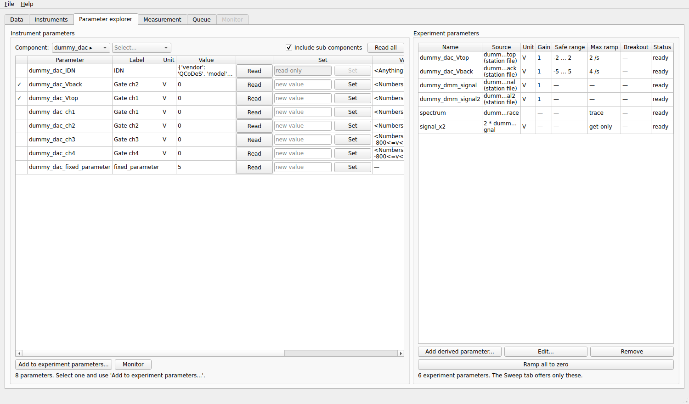
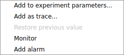
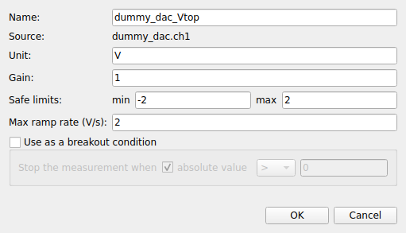
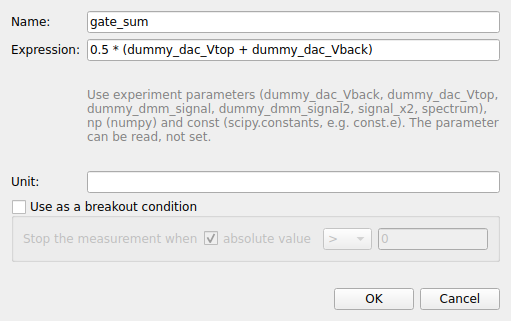
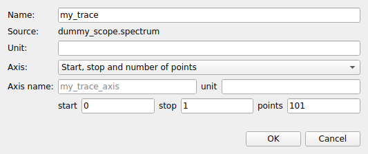

Parameter explorer tab
An instrument has hundreds of parameters; a measurement needs a few. The Parameter explorer is where you browse all the parameters of the connected instruments and choose the ones you work with. These are the experiment parameters, and they are the only parameters the Measurement, Queue and Monitor tabs offer.


Left: the parameters of dummy_dac. Right: the experiment parameters. A tick in the first column of the left table
means that the parameter is already an experiment parameter.
What is an experiment parameter?
An experiment parameter is an instrument parameter with a name of your choice and a protection:
a name (
Vtop,gate,temperature…), the one you see in sweeps, plots and the database;an optional gain (
value = instrument value × gain, for a voltage divider or a current amplifier);safe limits: the parameter can never be set outside them;
a maximum ramp rate: a change is always made in small steps that never exceed it;
an optional breakout condition that stops a measurement when the value crosses a threshold.
The aliases written in the station file become experiment parameters when their instrument is loaded. You can make more here, change them, or remove them; the definitions are remembered between sessions.
The instrument parameters (left)
- Component
Two drop-downs that walk the tree of the station: pick an instrument, then (if it has them) a channel or a sub-module. Choose a single parameter to see only that one.
- Include sub-components
Lists everything below the selection instead of only its direct parameters (at most 300 parameters at once; pick a sub-component to see the others).
- Read all
Reads every listed parameter.
For each parameter the table shows its name, label, unit and last known value, a Read button, a field and a Set button to change it, and the validator, step and inter-delay that QCoDeS applies when it is set. Type a value in the field and press Enter or Set: the value is checked against the validator before it is sent, and a parameter with a ramp rate is moved in steps. Parameters that cannot be set say read-only.
Some drivers set several values with one command; QCoDeS calls them group parameters. They are shown next to each other with a ⛓ mark and a grey background, and reading or setting one of them updates the others at once.
Right-click a parameter for a menu:


Add to experiment parameters… (or Edit experiment parameter… if it is one already);
Add as trace… for an array-valued parameter (see below);
Monitor / Remove from monitor: show it in the Monitor tab;
Add alarm / Remove alarm: raise an alarm when the value gets close to its limits (see Safety);
Restore previous value: puts back the value the parameter had before the last time you set it here, one step at a time.
Making an experiment parameter
Select an instrument parameter and click Add to experiment parameters…, or double-click its row.


- Name
Letters, digits and underscores. It must be unique and cannot be a name of the station.
- Unit
Shown in the program and in the plots. It is taken from the instrument when you leave it empty.
- Gain
The instrument value is multiplied by this to give the value of the experiment parameter.
- Safe limits (min and max)
The range the parameter may take. Leave a side empty for no limit on that side.
- Max ramp rate (unit/s)
The largest change per second. mesoscoPy makes every set in steps of this rate, one step every 0.1 s.
- Source
The instrument parameter it is made from (shown, not editable).
- Use as a breakout condition
Tick it to enable the breakout condition: Stop the measurement when the value (or its absolute value, if ticked) is
>,>=,<or<=a threshold. A measurement with Stop on breakout conditions ticked ends cleanly when it becomes true (a leaking gate, for instance). See Measurement tab.
The limits, the ramp rate and the gain only apply to parameters that can be set.
Derived parameters
A derived parameter is computed from other experiment parameters and is read-only: a carrier density from a gate voltage, a conductance from a current and a voltage. Click Add derived parameter… and type the expression:


The expression uses the names of the other experiment parameters, np (NumPy) and const (scipy.constants), for
example 0.5 * (dummy_dac_Vtop + dummy_dac_Vback). The parameter reads its sources every time it is read, and can be measured
and plotted like any other.
Traces
Some instruments return a whole array in one reading: a spectrum, a time trace. There are two kinds:
A driver may provide a trace with its own axis (a
ParameterWithSetpointsin QCoDeS). Add it with Add to experiment parameters…: it is measured as it is, and its axis is saved with it.A plain array parameter has no axis. Right-click it, Add as trace…, and describe the axis: a start, a stop and a number of points, or the values of another parameter.


Measure a trace in the Measurement tab like any parameter: every reading is one curve (see Measurement tab).
The experiment parameters (right)
The table lists every experiment parameter with its source, unit, gain, safe range, maximum ramp rate, breakout condition and
a Status (ready, or the reason it cannot be used, for instance that its instrument is not connected).
- Add derived parameter…
Makes a derived parameter.
- Edit…
Changes the selected parameter (double-click does the same). A parameter that other parameters or recipes use can be edited, but not removed while others are computed from it.
- Remove
Removes it. A parameter declared in the station file can be brought back with the button below.
- Ramp all to zero
Brings every settable experiment parameter to 0, at its maximum ramp rate (a parameter without a ramp rate is set directly). Each parameter ramps in its own job: parameters of different instruments ramp together. Use it to leave the sample safe. It is refused while a measurement runs.
- Restore parameters from the station file
Shown when you removed parameters that the station file declares: brings them back.
Right-click a row for Edit…, Remove, Ramp to 0, and Monitor.